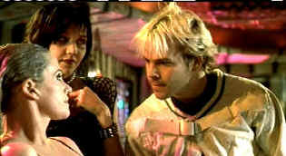

| Cecil B.
Demented (SE)C+,B+ |
| Artisan/2000/88/ANA
1.77 |
Do you remember the "let's make a show" spirit of the Judy Garland
Mickey Rooney musicals? It's alive and thriving in John Waters. Not that Waters makes movies that
are amateurish; nor does he strive for the innocence of those wonderful thirties light-hearted
musicals. There is a joie de vivre in Waters' movie-making that is often missing from more
commercial efforts. One could easily imagine Waters roaming around his favorite town Baltimore with
a digital video camera making obscure movies had he not somehow segued his way into the periphery
of the Hollywood establishment years ago. Cecil B. Demented is Water's own ode to guerilla
filmmaking: filmmakers wearing gorilla suits are a Waters specialty.
 |
| Ready when you are, CB. ©Artisan |
Cecil B. Demented directs a group of off-the-wall Indie filmmakers in a
brash kidnapping of Hollywood movie star Honey Whitlock. It could only happen at a Baltimore
premiere. Cecil proceeds to indoctrinate and integrate Honey into his team of movie vigilantes
fighting for the purity of cinema. The plot and characters are plumb silly, but despite the
nonsense, Waters squeezes a large helping of repugnant entertainment value from this production.
The rush of an ending is strictly lamentable.
Three cheers for Melanie Griffith in a performance that lets it all hang
out. Man, talk about a make-up job, Melanie could have been auditioning for the new TS/TV Network
talk show. Stephen Dorff's Cecil is loud, brash, obnoxious, and uninteresting. Wouldn't have been
nice if this character was given dialogue spiced by some slick schtick. The best we get from
Dorff's performance is an overbearing sense of boorishness.
Waters manages to make almost anything sunny in his own delightfully
twisted vision. The color scheme of the very violent Cecil B. Demented is an eyeful of
artificial candy. This translate quite well to DVD. There's still plenty of image energy in the
darker scenes and the garish Waters palette is preserved with outstanding perversity. The image is
quite sharp. You can count each painted hair on the eyelashes of Honey Whitlock. The Dolby Digital
5:1 tracks are a bit on the brash side, but it's in keeping with the nature of the film and
filmmaking.
A John Waters commentary track can be as funny or funnier than his filmmaking.
Waters loves to describe the landscape in terms of his own history and his audio commentary does
often ring funnier than the film on this special edition. In addition to the commentary
Comedy Central's Canned Ham: Cecil B. Demented Behind the Scenes is included.
|
|
|
|

Take a look at the merry images of America's gift to
the movies: Hollywood Musical Posters are featured from The Movie
Poster Archive.

Imaging Science Foundation
The Imaging Science Foundation promotes proper standards in home theater viewing. ISF trained
technicians offer monitor calibration services to consumers. The difference in a properly
calibrated monitor can be astounding. Click on the image to find an ISF member near you.

Elegant DVD portal with news, reviews, links and information
galore.
 Images
is a non-commercial Web site created for everyone who enjoys movies and popular culture. Images is
published quarterly; however, new reviews will appear each week, so check back often. Images
is a non-commercial Web site created for everyone who enjoys movies and popular culture. Images is
published quarterly; however, new reviews will appear each week, so check back often.

Mother Night/A-/A-
The eccentric style of Nick Nolte is perfect for the angst ridden
Howard W. Campbell, Jr., a hero or a villain.
|